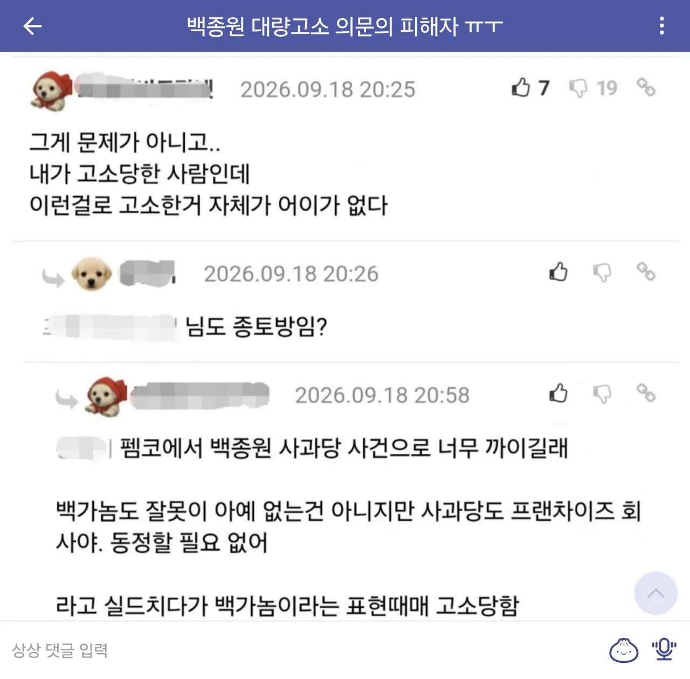

155 · 7 · 21 시간 전 · 원문

ㄷㄷ
수집 당시 댓글 7개
군터오딤 · 18 시간 전
백종원이 직접한게 아니고 법무법인 통해서 진행하는데 담당자가 뭔소린지 몰라서 걍 고소했을지도?? 예전에 손연재도 그런거 있었자나 ㅋㅋㅋㅋ 지 옹호하는 댓글인데 고소먹였던거 ㅋㅋㅋㅋㅋㅋㅋㅋㅋ
든든뜨끈국밥 · 17 시간 전
너무 무섭다
전우애의신 · 17 시간 전
윤가놈 안되겠네 이거 원기옥을 얼마나 모으고있는거야?
죠썸 · 16 시간 전
점주들 얼마나 화난거임 ㄷㄷ 무차별 고소난사중이네
자니02 · 15 시간 전
변호사농가는 확실하게 살리네
rrrrm · 15 시간 전
앞으로는 그분의 존함을 킹갓빛황종원사마 라고 명명하도록!
비눗방울 · 14 시간 전
보통 필터로 긁어서 대량으로 때리거든
저런거 하나하나 안봄
백종원이 직접한게 아니고 법무법인 통해서 진행하는데 담당자가 뭔소린지 몰라서 걍 고소했을지도?? 예전에 손연재도 그런거 있었자나 ㅋㅋㅋㅋ 지 옹호하는 댓글인데 고소먹였던거 ㅋㅋㅋㅋㅋㅋㅋㅋㅋ